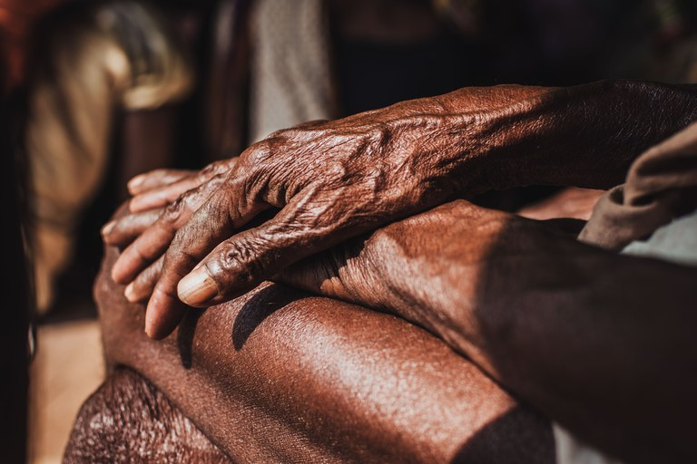
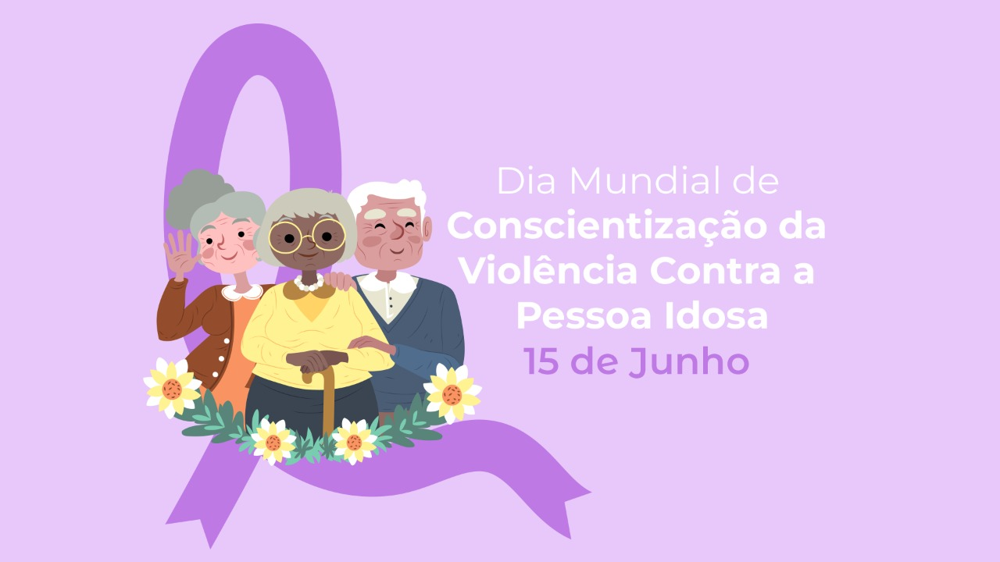

Disque 100 registra mais de 35 mil denúncias de violações de direitos humanos contra pessoas idosas em 2022
Nesta quarta-feira (15), Dia Mundial de Conscientização da Violência contra a Pessoa Idosa, o Ministério da Mulher, da Família e dos Direitos Humanos (MMFDH), divulga balanço de dados do Disque 100 sobre o tema. Segundo as informações, de janeiro a 2 de junho de 2022, já foram registradas mais de 35 mil denúncias de violações de direitos humanos contra pessoas idosas. “Em mais de 87% das denúncias (30.722) as violações ocorrem na casa onde o idoso reside”, acrescenta o ouvidor nacional de Direitos Humanos, Nabih Chraim. Destas, 16 mil ocorreram na casa onde residem a vítima e o suspeito. Entre os agressores, os filhos são os principais responsáveis pela violação, figurando como suspeitos em mais de 16 mil registros, seguidos por vizinhos (2,4 mil) e netos (1,8 mil). Vítimas com faixa etária entre 70 e 74 anos aparecem em 5,9 mil registros. Em seguida, estão os idosos entre 60 e 64 anos (5,8 mil); os idosos entre 65 e 69 anos (5,4 mil); os idosos entre 80 e 84 anos (5,2 mil); os idosos entre 75 e 79 anos (4,7 mil); os idosos entre 85 e 89 anos (3,5 mil); e idosos com mais de 90 anos (2,5 mil).
Envelhecimento populacional
Dados da ONU apontam que o Brasil é o País que envelhece com mais rapidez no mundo. Em 2050, a estimativa é que uma em cada seis pessoas no mundo terá mais de 65 anos."Por isso, é importante que o poder público esteja atento e crie cada vez mais políticas públicas efetivas e proporcionem a essa população condições para que a longevidade seja acompanhada por bem-estar, qualidade de vida, segurança e respeito", defende Flávia Morais.
